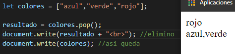

string = "cadena de texto"
number = 19
booleano = false
Limita el alcance de la variable al bloque en el que lo ejecutamos. Se puede definir de diferentes formas: let numero1 = 15, numero3 = 11. Separando por comas
let numero = 29; //inicialización
numero = 23; //modifique
alert (numero)
Constante, la unica que no se puede cambiar su valor. Ej: numero PI, ya que nunca cambia. No se puede declarar y despúes inicializar, sino Inicializar cuando se declara.
const pi = "3.14";
alert (pi)
let numero = null
let numero =5
let numero2 ="pedro"
alert (numero * numero2)
Resultado: NaN. Si uso + concatena. Pero en este caso no pudo realizar la operación.
Forma de pedir datos. Se guarda usando las variables.
prompt('Escribe tu nombre')
let nombre = prompt("decime tu nombre") //Forma de guardar
alert(nombre)
alert("Hola " + nombre)
Un operador de asignación asigna un valor al operando de la izquierda basado en el valor del operando de la derecha.
let numero = 10;
numero += 5; //Le estoy sumando 5, es igual a: numero = numero + 5
document.write(numero)

Los operadores Aritméticos toman valores numéricos (ya sean literales o variables) como sus operandos y retornan un valor numérico único.

numero1 = 53;
numero2 = 8
frase = "Hola" + numero1 + numero2
document.write(frase). Resultado: Hola538
Otra forma de realizar la concatenación es con ${}``. Cuando String detecta texto convierte todo en texto. Si a la frase le sacamos "Hola" el resultado seria: 61.
nombre = Pedro;
frase = `Soy ${nombre} y estoy caminando`;
document.write(frase). Resultado: Soy Pedro y estoy caminando
Los operadores de comparación comparan dos expresiones y devuelven un valor Boolean (true o false) que representa la realción de sus valores. Funciona con número y texto.
let numero = 23
let numero2 = 13
document.write(numero == numero2). Resultado: false
El = solo asigna. Para comprar usamos ==. Para ver si es exactamente idéntico, usamos === (mismo tipo de dato y valor).
Lo mismo sucede con != y !==
let numero = 23
let texto = "23"
document.write(numero == texto). Resultado: true
document.write(numero === texto). Resultado: false

Los operadores lógicos nos devuelven un resultado a partir de que se cumpla (o no) una condición, su resultado es booleano, y sus operandos son valores lógicos o asimilables a ellos.

&&
||
!: Regresa lo contrario de lo que le devuelvo
Ejemplo:
num1 = 12
num2 = 24
num3 = 25
num4 = 92
num5 = 91
op= (num1 < num2 || num2 < num3) && (!(num1 != num2) && num5 != num3);
op= (true || true)) && (!true && true);
op= (true || true)) && (false && true);
op= (true) && (false);
document.write(op). Resultado: false. Primero separa en términos, luego realiza &&
Es una sentencia que nos permite validar algo. Los bloques se ejecutan si la condición se cumple.
Ejemplo:
if (10 < 15){
alert("hola")
}
En este caso, el alert, se ejecutaría.
nombre = "Laura"
if (nombre == "Pedro"){
alert("hola");
}
En este caso, el alert, no se ejecutaría.
ELSE IF: Si lo anterior no se cumple, podemos agregar otra condición. Se puede repetir cuantas veces querramos.
nombre = "marta"
if (nombre == "sofia") {
alert ("tu nombre es lindo");
} else if (nombre == "marta"){
alert ("tu nombre es feo");
}
ELSE: sin condición
else {
alert("tu nombre es otro");
}
parseInt: convierte la cadena de texto en un número.
El tipo de los elementos de un array son variables. El array ya no es un dato primitivo sino un objeto. En las variables podemos guardar un dato, en el array podemos guardad muchos datos. Se utiliza [] y se separa por ,. Ejemplo:
let frutas = ["banana", "manzana", "pera"];
Las posiciones arrancan desde 0.
document.write(fruta[1]) Resultado: Manzana
Un array con valor asociado. Las posiciones tienen un nombre.
let pc1 = {
nombre: "SofiaPC"
procesador: "Intel Core I7"
ram: "16GB"
espacio: "1TB"
};
document.write(pc1["nombre"]) Resultado: SofiaPC
A diferencia con el IF que pregunta una sola vez, el WHILE pregunta siempre. Nunca ejecuta una sentencia si es falsa.
let numero = 0
while (numero < 6){
numero++;
document.write(numero)
};
Resultado: 123456
La condición se pregunta despúes.
let numero = 0
do{
document.write(numero);
numero++;
}
while (numero <=6)
Resultado: 0123456
Break termina la sentencia While.
let numero = 0
while(numero < 1000){
numero++;
document.write(numero);
if (numero == 14) {
break;
}
}
Resultado: 01234567891011121314
Es igual que While, pero es un bucle determinado. Bucles como While o Do While, no le decimos cuantas vueltas van a dar.
FOR se compone de 3 partes: donde declaramos, donde las inicializamos y donde las iteramos (hacer lo mismo varias veces).
for (let i = 0; i < 6; i++){ ← Declarar variable e incialiazamos. Luego condición.
Salteando un valor. No finaliza por completo el bucle, sino detiene esa iteración, pasando a la siguiente.
for (let i = 0; i < 20; i++){
if (i == 12){
continue;
}
document.write(i);
}
Resultado: 0 1 2 3 4 5 6 7 8 9 10 11 13 14 15 16 17 18 19 20 (Saltea nro 12)
Nos devuelve la posición en la que está los elementos.
let animales = ["gato","perro","tiranosaurio rex"];
for (animal in animales){
document.write(animal);
}
Resultado: 0 1 2
document.write(animales[animal]);
Resultado: gatoperrotiranosaurio rex
Nos muestra el valor de los elementos.
let animales = ["gato","perro","tiranosaurio rex"];
for (animal of animales){
document.write(animal);
}
Resultado: gatoperrotiranosaurio rex
Sentencia que nos permite asocial cualquier bucle (excepto for ich) a un nombre para poder terminarlo cuando querramos.
Function: palabra para crear funciones. Al declarar una función, nos ahorramos de repetirla varias veces (Ahorramos código). Ejemplo
Otra forma de crear funciones es asignandolas en variables
= functionsaludar (){
Sirve para devolvernos un valor, para que el bloque de código devuelva un tipo de dato. Finaliza la función (PARECIDO A BREAK).
function saludar (){
alert("Hola");
return "la función se ejecutó correctamente"
}
let saludo = saludar();
document.write(saludo)

Otro ejemplo

Otra forma de usarlo es reemplazando el function por => (Función en flecha.)


Son acciones que podemos hacer

Intentar reducir un objeto, hacer que sea lo menos complejo que podamos. Reducimos sus componentes básicos. Ej: perro: raza, color, tamaño
Capacidad de resolver un problema grande, separandolo por partes.
Toda la data esté privada. Que el usuario no pueda acceder tan facil.
Capacidad que tiene un objeto de comportarse distinto por sus propiedades. Ver como un objeto se comporta de manera distinta ante el mismo método. Ej: animal > camina. Un perro camina de una forma, una gallina de otra, etc.
Es crear una clase que va a tomar todo lo que puede hacer la otra clase y sus propiedades, pero agregandole cosas nuevas.

Es un método que no necesita que la clase sea definida para ser creado.
Setters: Para modificar o definir un valor.
Getters: Sirve para obtener un valor.

Juntas dos o más cadenas y retorna una nueva.

Si una cadena comienza con los caracteres de otra cadena, devuelve true, sino devuelve false.
Si una cadena termina con los caracteres de otra cadena, devuelve true, sino devuelve false.

Si una cadena puede encontrarse dentro de otra cadena, devuelve true, sino devuelvev false.
Igual que la anterior, pero devuelve el indice del primer caracter de la cadena, si no existe, devuelve -1

Devueve el ultimo indice del primer caracter de la cadena, si no existe, devuelve -1.
Propuesta de Estandar. Rellenar cadena al princio con los caracteres deseados.
Propuesta de Estandar. Rellenar cadenas al final con los caracteres deseados.
Devuelve la misma cadena pero repetida la cantidad que querramos. cadena.repeat(10)
Divide la cadena como le pidamos. Si escribimos cadena1.split("como"), lo eliminaria.
Nos retorna un pedazo de la cadena que seleccionamos
Convierte una cadena a minúscula.
Convierte una cadena a mayúscula.
Método devuelve una cadena que representa al objeto especificado.
Elimina los espacios en blanco al principio y al final de una cadena.
trimEnd: elimina los espacis en blanco al final de una cadedna
trimStart: elimina los espacios en blanco al comienzo de una cadena,
retorna el valor primitivo de un objeto string.
Propiedad de una cadena, nos dice cuantos caracteres tiene. Ej: document.write(resultado.length);
pop: elimina el útimo elemento de un array lo devuelve.
shift: elimina el primer elemento de un array y lo devuelve.
push: agrega un elemento al array al final de la lista y devuelve la cantidad de elementos.
reverse: invierte el orden de los elemento de un array.
unshift: agrega uno a más elemento al inicio de un array, y devuelve la nueva longitud del array.
sort: ordena los elementos de un arreglo localmente y devuelve el arreglo ordenado.
splice: cambia el contenido de un array eliminando elementos existentes y/o agregando nuevos elementos. Si no quiero eliminar ninguno pongo 0. Si lo quiero agregar al final pongo -1 (FORMA DE REFERIRSE AL FINAL DE UN ARRAY)
join: une todos los elementos de una matriz (u objeto similar) de una cadena y la devuelve. Atención: crea un nuevo array, guardarlo en let.
slice: devuelve una parte del array dentro de un nuevo array empezando por incio hasta fin (fin no incluido). 1°: a partir de que posición. 2°: cantidad que quiero que muestre.Si no ponemos ninguno, nos muestra todos los elementos.
Metodos ya vistos: toString, indexOf, lastIndexOf, includes.
filter: crear un nuevo array con todos los elementos que cumplan la condición. Es una función.

forEach: ejecuta la función indicada una vez por cada elemento del array.
sqrt(): devuelve la raiz cuadrada positiva de un número.
cbrt(): devuelve la raíz cúbica de un número.
max(): devuelve el mayor de cero o más números. Ej: Math.max(4,1,25,547,17)
min(): devuelve el más pequeño de cero o más números.
random(): devuelve un número pseudo-aleatorio entre 0 y 1.
round(): devuelve el valor de un número redondeado al número
fround(): devuelve la representacón flotante de precisión simple más cercana de un número.
floor(): devuelve el mayor entero menor que o igual a un número. Ej: Math.floor(4.99999) = 4
trunc(): devuelve la parte entera del numerp x, la eliminación de los dígitos. Parecido a round. Ej: Math.trunch(9,99)=10
assert(): aparece un mensajede error en la consola si la afirmación es fala. Si la afirmación es verdadera, no aparecerá nada.
clear(): limpia la consola
error(): muestra un mensaje de error en la Consola Web.
info(): emite un mensaje informativo a la Consola Web. En Firefox y Chrome, se muestra un pequeño icono "i" junto a estos elementos en el registro de la Consola Web.
log(): Muestra un mensaje en la consola web (o del intérprete JS).
table(): esta función tomo un argumento obligatorio: data, que debe ser un array o un objeto, y un parámetro adicional: columns y nos muestra una tabla en consola.
warn(): imprime un mensaje de advertencia en la Consola Web.
dir(): despliega una lista interactiva de las propiedades del objeto JS especificado
¿Que item se relaciona con el concepto de Scope? Es el contexto actual de ejecución.
¿Cuál es la forma correcta de escribir el arrow function de: function (a){ return a + 100;}? a=>a+100;
Una función de callback es una función que se pasa a otra función como un argumento
Crear un bucle que recorra cada elemento del array:
var frutas =["Manzana","Plátano";"Naranja"];
for(_____){
console.log(frutas[i]);
}
Puede ir:
a. i in frutas
b. i=0;i(< sin parentesis)3;++